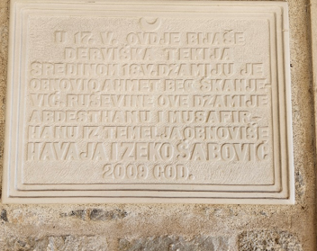

Prvobitno zdanje ove džamije datira iz 1723. godine. Prema natpisu na njoj, izgradilo ju je nekoliko uglednih građana, među kojima se posebno ističe Derviš Hasan, pa se i zove Derviš Hasanova džamija. atpis je ispisao ‘mali majstor (usta’a) Muhamed sin Hasanov, 1135. po Hidžri, 1723.
Pocetna
Džamija je srušena 1881. godine od eksplozije baruta uzrokovanoj udarom groma. Tom prilikom je Bar stradao, uništeni su mnogi objekti a bilo je i ljudskih žrtava. Pored džamije uništen je i mekteb. Te godine imam je bio Šabić. On se tim povodom obratio kralju Nikoli, preko Ministarstva unutrašnjih djela na Cetinju, moleći ga za pomoć opravke džamije, navodeći da ‘nemaju svoje bogomolje a uz Ramazan osobito ne mogu bez nje’.
Džamija je obnovljena, a munare podignuto tek 1971. godine. Godine 1979. ponovo je stradala u zemljotresu, a temeljito obnovljena 1991. prilozima mještana, učešćem u radu, materijalu i raznim donacijama. Zidana je od kamena. Njene dimenzije su 12×9 metara, sa unutrašnjim prostorom od 70m2. Oko džamije se nalazi mezarje sa brojnim nišanima različitih vrsta, koje su radili domaći majstori. Pažnju posebno privlači jedan ženski nišan, vrijedan spomenik iz XIX vijeka. U haremu džamije se nalazi abdesthana kao i šedrvan kojeg je podigla svojim sredstvima porodica Ekrema Zaganjora 2000. godine.
Njeni službenici bili su: Hodža Šabić 1881. godine, Husein Spica koji je bio i kadija, Husein Karađuzović, Rustem Krčiković…